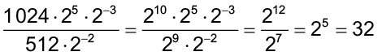

Acabamos de revisar as propriedades da potenciação estudadas em anos
anteriores.
Sendo a e b números
reais
e, m e n números inteiros, podemos
generalizar essas propriedades.
As propriedades da potenciação podem nos auxiliar a resolver expressões sem
que
precisemos inicialmente resolver cada uma das potências.
Vamos resolver a expressão .
Primeiramente, vamos transformar 1 024 e 512 em potências de base 2,
fatorando
cada um dos números. Observe:
Substituindo 1 024 e 512 por 210 e 29, respectivamente, e aplicando as propriedades da potenciação, temos:

Notação científica
Para escrevermos um número na forma de notação científica, temos que transformar esse número
em
um produto de dois fatores, sendo que o primeiro fator será um número maior ou igual a 1 e menor que 10, e o
segundo, uma potência de base 10.
- Troque ideias com um colega e, no caderno, escrevam as medidas a seguir em forma de
notação científica.
- A distância aproximada entre o Sol e a Terra é de 150 000
000
km.
- O diâmetro de uma molécula de água é de aproximadamente
0,00000000025 m.
- No caderno, escreva os números a seguir na forma de notação científica.
- 13 000
- 459 000 000
- 0,008
- 0,000000011
- 790 000 000
- 0,0000092
- As ondas eletromagnéticas não foram inventadas pelo homem, porém ele
aprendeu a usá-las a seu favor. Algumas dessas frequências são
utilizadas no sistema de comunicação aérea civil e militar, ambulâncias, telefone sem fio, aparelhos de
controle remoto, etc. As emissoras de rádio e TV têm a sua faixa de
frequência reservada dentro do espectro. Observe a seguir a
frequência
de algumas rádios.
|
Rádio
|
Frequência
|
|
Rádio AM
|
1 080 kHz (quilohertz)
|
|
Rádio FM
|
102 MHz (megahertz)
|
|
Rádio amador
|
147 MHz (megahertz)
|
|
Rádio digital
|
11 GHz (gigahertz)
|
O hertz (Hz) é a unidade de medida derivada do Sistema
Internacional
para frequência e equivale a um ciclo por segundo. Abaixo, temos a
relação
entre o hertz e alguns dos seus múltiplos.
- 1 kHz equivale a 103 Hz
- 1 MHz equivale a 106 Hz
- 1 GHz equivale a 109 Hz
Expressando na forma de notação científica, escreva a frequência de
cada uma das emissoras de rádio citadas acima em unidade de Hz.
- (CMB) Considerando que a distância da Terra ao Sol (D) é igual a 150
000
000 km e a velocidade da luz (V) é igual a 300 000 km/s, podemos afirmar que:
- D = 1,5 ∙ 108 km e V = 0,3 ∙ 105 km/s
- D = 15 ∙ 108 km e V = 3 ∙ 105 km/s
- D = 1,5 ∙ 108 km e V = 3 ∙ 105 km/s
- D = 15 ∙ 108 km e V = 0,3 ∙ 105 km/s
- (FUVEST) As células da bactéria Escherichia coli têm
formato cilíndrico, com 8 x 10−7 metros de diâmetro. O
diâmetro de um fio de cabelo é de aproximadamente 1 x 10−4 metros. Dividindo-se o
diâmetro de um fio de cabelo pelo diâmetro de uma célula de Escherichia
coli,
obtém-se, como resultado:
- 125
- 250
- 500
- 1 000
- 8 000
- Em dupla, elaborem uma situação-problema em que haja uma operação
entre
números representados em notação científica. Troquem os cadernos, para que vocês resolvam os problemas
propostos por ambos e, juntos, verifiquem se a resolução apresentada está correta.
- A linha do tempo a seguir mostra as diferentes espécies de hominídeos e os períodos em que sua existência foi confirmada por meio de
fósseis. As novas descobertas ajudam a preencher a grande lacuna que
há
na época do surgimento do gênero Homo.
De acordo com o infográfico, responda:
- Como se chama o mais antigo fóssil da espécie Australopithecus afarensis?
- Há quanto tempo viveu a primeira espécie de hominídeo a fazer ferramentas de pedra?
- Como se chama o país onde foi descoberto o fóssil Lucy?
- Como se chama o país onde foi descoberto o mais característico fóssil do Homo habilis?
- No infográfico, temos diversos números que representam o tempo em que viveram várias
espécies. A seguir, selecionamos alguns deles. Escreva-os em notação científica.
- 3,5 milhões
- 300 mil
- 350 mil
- 30 mil
- 50 mil
- 2,3 milhões
![Desenho colorido de uma árvore com copa grande e cheia de folhas verdes. No topo está escrito “minha arvore genealógica”. Nomes aparecem em cada ponta dos galhos de acordo o parentesco. A árvore é dividida em duas partes da família, a do pai e a da mãe. À esquerda, de cima para baixo, segue e sequência dos bisavós Ana e Pedro e Amélia e Raul. Depois os avós Regina e Artur e por fim a mamãe Martha. Na parte direita, também de cima para baixo, os bisavós Márcia e Roberto, Angela e Marcos. Depois os avós Paulo e Inês e por fim o papai Carlos. No tronco da árvore o nome da Júlia.](../../resources/images/../../resources/images/9ANO_U1-web-resources/image/Mat-9A_U1_01.png)


 em
que a
em
que a


![Linha do tempo que retrata as diferentes espécies de hominídeos começando a 04 milhões de anos atrás e indo até os dias de hoje. Algumas informações históricas são retratadas no percorrer da linha, que são:
Uma linha vermelha na horizontal sai da marcação 4 milhões de anos atrás, e vai até um pouco depois da marcação 03 milhões de anos atrás. Essa linha indica a informação: Australopithecus afarensis - Lucy, o mais importante fóssil da espécie tinha 3,5 milhões de anos.
Na linha do tempo entre as marcações 3 milhões e 2 milhões há duas informações históricas:
Primeira Informação: mostra um quadro com duas imagens. Imagem 1 - fotografia colorida de mãos que seguram uma mandíbula que foi encontrada no sítio de Ledi-Geraru, na Etiópia. Ao lado da fotografia está escrito: Science: uma mandíbula encontrada em 2013 é o mais antigo representante do gênero homo. O fóssil tem 2,8 milhões de anos: pela idade está próximo dos Australopithecus, mas suas características são semelhantes à do Homo habilis. Imagem 2 - mapa em escala ampliada da África Oriental com a Etiópia em destaque que faz fronteira com Somália, Quênia, Sudão do Sul, Sudão, Eritreia e Djibouti. Ao norte do território da Etiópia há a capital Adis Abeba. Próximo à capital há um quadrado ligado a uma linha que leva até a representação ampliada dos sítios arqueológicos que marcam à esquerda as informações: mais antiga ferramenta de pedra; mais antigo fóssil do gênero homo até a nova descoberta; Fóssil Lucy, e à direita a marcação Nova Descoberta.
Segunda Informação: está escrito Australopithecus gardhi - o primeiro hominídeo a fazer ferramentas de pedra viveu há 2,5 milhões de anos.
Na linha do tempo entre as marcações 2 milhões de anos atrás e 1 milhão de anos atrás há três informações históricas:
Primeira Informação: Uma linha vermelha na horizontal sai um pouco antes da marcação 2 milhões de anos atrás, e vai até um pouco depois da marcação 2 milhões de anos atrás. Essa linha indica a informação Homo habilis - o primeiro representante do gênero Homo viveu de 2,3 milhões a 1,6 milhões de anos atrás.
Segunda Informação: mostra um quadro com três imagens e algumas informações escritas. Imagem 1 - representação computadorizada de um crânio, com a legenda A reconstrução por meio de computador finalmente permitiu comparar espécimes de Homo habilis. Imagem 2 - fotografia colorida do fóssil encontrado na Tanzânia em 1964, que representa pedaços de mandíbula, crânio e mãos espalhados em uma superfície lisa. Imagem 3 - mapa em escala ampliada da África Oriental que retrata o local da descoberta. No mapa há destacado a Tanzânia e a capital Dodoma. Ao norte da Tanzânia, um quadrado vermelho marca Olduvai Gorge. A Tanzânia faz fronteira com Moçambique, Zâmbia e Quênia. Há no quadro a informação escrita: Nature - o mais característico fóssil Homo habilis (1,8 milhão de anos) foi construído por computador para ser comparado ao mais antigo fóssil da espécie (2,3 milhões de anos). Ele mistura características que vão do Australopithecus ao Homo Erectus.
Terceira Informação: Uma linha vermelha na horizontal sai um pouco depois da marcação 2 milhões e vai até mais da metade após a marcação de 1 milhão. Essa linha indica a informação: Homo Erectus - a primeira espécie de hominídeo a sair da África: viveu de 1,8 milhão de anos a 300 mil anos atrás.
Na linha do tempo entre as marcações 1 milhão e Hoje, há duas informações históricas: Primeira Informação: uma linha vermelha na horizontal sai um pouco antes da marcação Hoje. Essa linha indica a informação: Homo Neanderthalensis - uma espécie de hominídeo a conviver com o Homo sapiens: viveu de 350 mil a 30 mil anos atrás.
Segunda Informação: uma linha vermelha na horizontal sai um pouco antes da marcação Hoje. Essa linha indica a informação: Homo Sapiens - única espécie restante do gênero homo. Saiu da África a cerca de 50 mil anos atrás. Fonte: Estadão.](../../resources/images/9ANO_U1-web-resources/image/MAT_9_ano_U1_Infogr_fico.jpg)